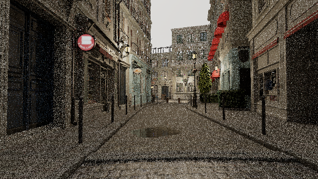
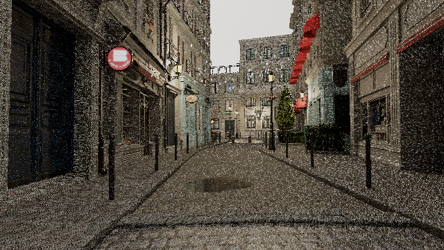
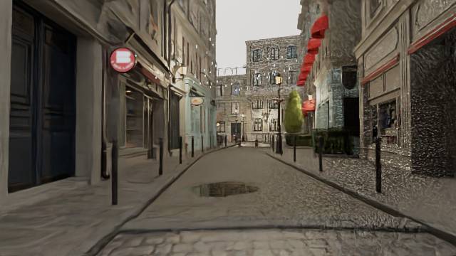
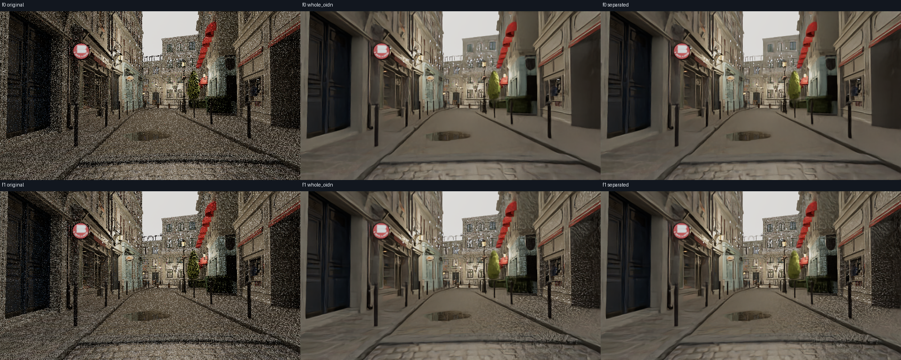
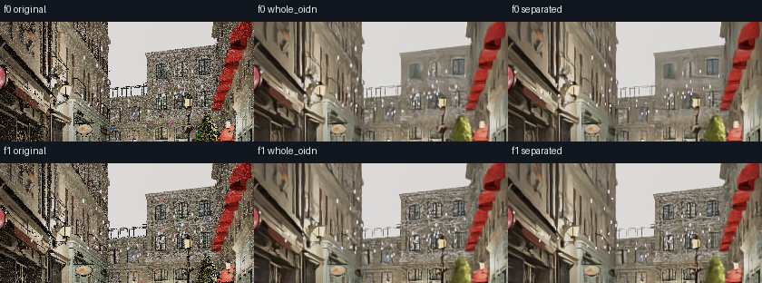
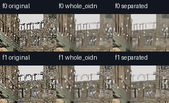
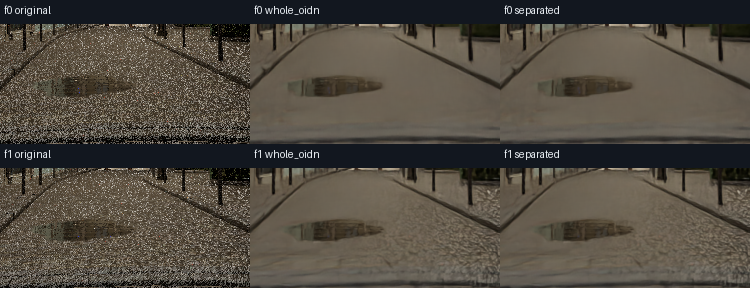

已实现并用两帧实际HDR验证：只去噪雨前背景，再按真实预乘雨颜色与透射率重组。背景颗粒明显减少，短雨丝比整图OIDN保留得更清楚；固定雨辐射造成的偏白小棒仍在，细节软化和第二帧局部残留颗粒仍明显，不判定整体画质通过，也不替换预设。
整图OIDN仍保留部分亮短条，但会柔化或削弱局部雨信号；拆层版保留更多清晰短雨丝。两种OIDN均显著减少背景密集颗粒，同时损失路面细纹、墙面细节与植物层次。f1右墙、右侧道路和前景石路仍有明显粗颗粒/波纹，远比f0杂乱；拆层没有修复这种帧间表现差异。
雨前HDR和正确透明重组路径已打通。下一项雨修复应针对固定辐射的雨颜色来源/场景依赖散射或折射，而不是继续改形状或压整图曝光；背景还需针对残留颗粒和跨帧变化选择更合适的重建输入。保留晴天及所有既有预设，停止本轮GPU任务。
这是离线CPU捕获后重组候选，未接入实时GPU帧图或TSR；没有透明层历史重投影或时序稳定保证。
只有两个连续640×360输出，首末间隔约1/60秒；不代表1080p或长动态验收，不代替先前61帧白屑发现。
保留了固定雨辐射，所以不会自动解决高对比白屑；可见性增加不等于自然感改善。
OIDN color-only背景去噪仍有纹理软化与残留颗粒，未修复采样/传输噪声的根因，也未恢复云层层次。
独立原图 / 整图OIDN / 雨前背景OIDN对照 · 本轮决策 · source_result.json · source.diff · capture_verification.json · export_separated.py · rain_formula_probe.json · pre_rain_capture_notes.json · visual_review.json
离线CPU候选：对雨前背景进行OIDN，再按捕获的coverage与雨贡献重合成。固定雨辐射未改，未加入雨滴场景光照求解；这不是物理雨照明修复。没有接入实时GPU降噪，没有时序稳定保证，也不改变既有预设或OIDN选择。
总体状态及原有验收条目保持不变。
三列均由同一线性HDR输入以 EV8、wide-C1、sRGB 显示，没有逐图归一化。中列对含雨总图去噪；右列只对雨前背景去噪，再以实际覆盖率和雨合成残差重组。原始HDR未修改。
T=1−coverage；A=post−T×pre。右列采用等价的稳定形式 post+T×(OIDN(pre)−pre)。A只作float64统计并保留小负舍入残差，不裁剪。它不是把雨RGB直接相加，也不是重新生成雨。显示是同一wide-C1压缩曲线；曲线对负输入采用现有max(HDR,0)，不硬裁HDR高亮。
这是独立帧的CPU离线候选，未集成GPU/TSR，无时序稳定或整体画质通过承诺。主列不是actual presented重放；实际presented另列链接。色彩导向输入仅color，未伪造玻璃/雨的normal或albedo。
OIDN进程墙钟合计：1.732秒；不是GPU渲染性能。数据与误差检查
| Original post-rain HDR | OIDN whole post-rain HDR | OIDN background + captured rain |
|---|---|---|
| f0  | f0 | f0 |
| f1  | f1 | f1  |




背景单独OIDN图和coverage图只帮助归因，不属于三列主对照。coverage按固定[0,1]→[0,255]灰阶，不拉伸。
f0：仅雨前背景OIDN · 实际当前覆盖率 · actual presented
f1：仅雨前背景OIDN · 实际当前覆盖率 · actual presented